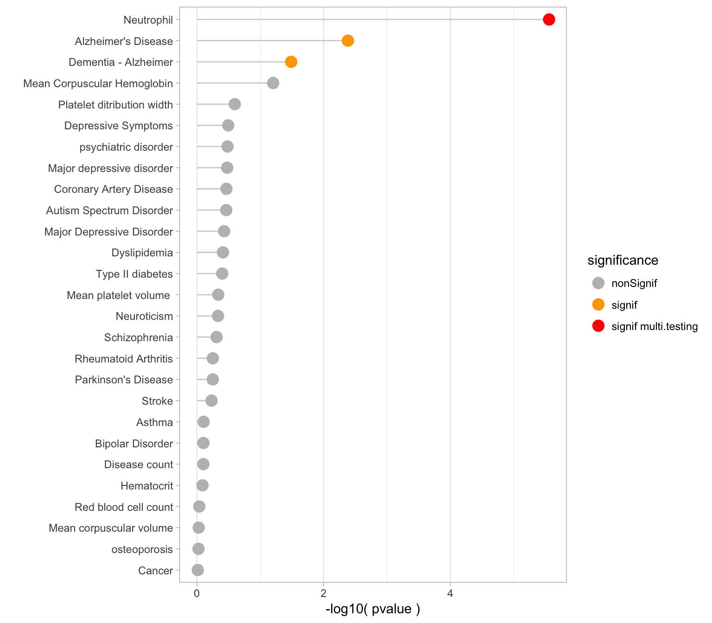
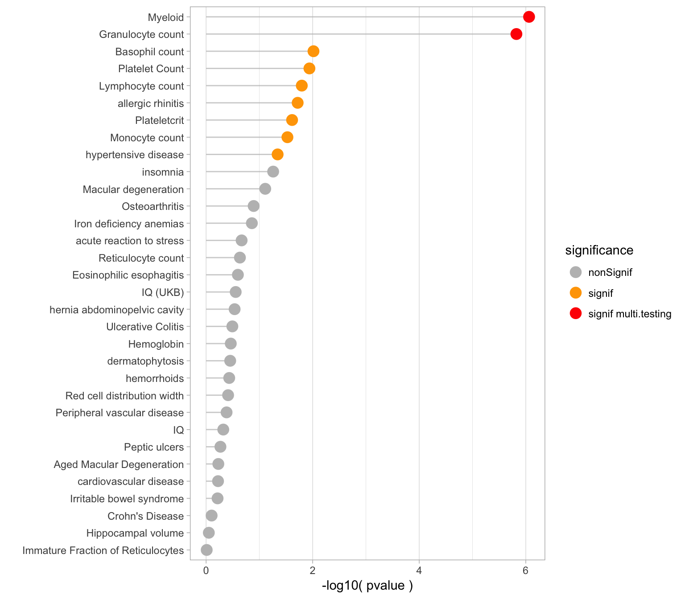
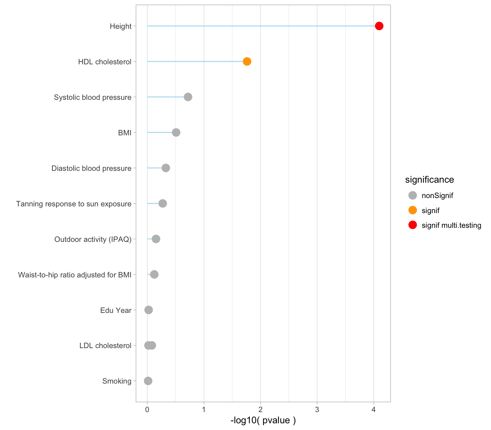

Yan Holtz, Zhihong Zhu, Julanne Frater, Perry Bartlett, Jian Yang, John McGrath
GSMR is a tool that allows to run mendelian randomization on summary statistics of GWASs. Basically, its use will test if vitamin-D has a causal effect on other traits and diseases.
The GSMR pipeline requires two types of input file:
Risk factor GWAS - This is the GWAS computed on Vitamin-D concentration and described in the previous tab. Note that waiting for the UKB data, the data of Xia et al. will be used. (sample size of about 80k people).
Note: cleaning the GWAS summary statistics has been a big work. This step is explained in the script cleaning_GWAS_sumstat.sh
Step 1: get the last GCTA version that support GSMR. This program is now available on my delta folder at ~/bin/gcta64
Step 2: prepare files - split to have on file per outcome - run GSMR - concatenate results together - transfer result locally. This is done on delta.
# Specific repo
cd /shares/compbio/Group-Wray/YanHoltz/VITAMIND_XIA_ET_AL/3_GSMR
# Prepare a file that gives the location of every b-file (one per chromosome)
ls /gpfs/gpfs01/polaris/Q0286/UKBiobank/v2EURu_HM3/ukbEURu_imp_chr*_v2_HM3_QC.bed | sed 's/.bed//' > gsmr_ref_data.txt
# prepare a file that gives the link to the GWAS result for the risk factor = Vitamin D
echo "vitaminD /shares/compbio/Group-Wray/YanHoltz/DATA/GWAS/XiaEtAl_VitaminD/GWAS_vitaminD_XiaEtAL.ma" > gsmr_exposure.txt
# prepare ONE file that lists all the outcomes. This file has been build in Excel format locally
cd /Users/y.holtz/Dropbox/QBI/4_UK_BIOBANK_GWAS_PROJECT/VitaminD-Causality/0_DATA
R
library(gdata)
tmp <- read.xls("list_of_traits_GSMR.xlsx", header=T)
tmp <- tmp[ , c("Trait","File")]
tmp$File <- paste("/shares/compbio/Group-Wray/YanHoltz/DATA/GWAS/GWAS_SUMSTAT/", tmp$File, sep="")
write.table(tmp, file="list_of_traits_GSMR.txt", row.names=FALSE, quote=FALSE, sep="\t")
q("no")
scp list_of_traits_GSMR.txt y.holtz@delta.imb.uq.edu.au:/shares/compbio/Group-Wray/YanHoltz/VITAMIND_XIA_ET_AL/3_GSMR
cat list_of_traits_GSMR.txt | sed 's/ /_/g' > gsmr_outcome.txt
# Split this file: one file per outcome:
split -l 1 --numeric-suffixes gsmr_outcome.txt
for i in x0* ; do a=$(echo $i | sed 's/x0/x/') ; mv $i $a ; done
# send an array of GSMR
tmp_command="gcta64 --mbfile gsmr_ref_data.txt --gsmr-file gsmr_exposure.txt x{TASK_ID} --gsmr-direction 0 --out gsmr_result_vitaminDXiaEtAl_{TASK_ID}"
qsubshcom "$tmp_command" 1 30G GSMR_array 10:00:00 "-array=1-72"
# Once it's over, concatenate the results in a unique file
cat gsmr_result_vitaminDXiaEtAl_*gsmr | head -1 > gsmr_result_vitaminDXiaEtAl.gsmr
cat gsmr_result_vitaminDXiaEtAl_*gsmr | grep -v "Exposure" >> gsmr_result_vitaminDXiaEtAl.gsmr
rm *[0-9].gsmr x* *badsnps qsub* *log
# Then from locally to delta
cd /Users/y.holtz/Dropbox/QBI/4_UK_BIOBANK_GWAS_PROJECT/VitaminD-Causality/0_DATA
scp y.holtz@delta.imb.uq.edu.au:/shares/compbio/Group-Wray/YanHoltz/VITAMIND_XIA_ET_AL/3_GSMR/gsmr_result_vitaminDXiaEtAl.gsmr .Step 3: read results. Description:
# Libraries
library(tidyverse)
library(DT)
# Read gsmr result
gsmr <- read.table("0_DATA/gsmr_result_vitaminDXiaEtAl.gsmr", header = T) %>%
mutate(Outcome=gsub("_", " ", Outcome))
# Read the meaning of files:
library(gdata)
meaning <- read.xls("0_DATA/list_of_traits_GSMR.xlsx", header=T)
primary <- gsmr %>% filter( Outcome %in% meaning$Trait[ which(meaning$Group=="Primary") ] )
secondary <- gsmr %>% filter( Outcome %in% meaning$Trait[ which(meaning$Group=="Secondary") ] )
risk <- gsmr %>% filter( Outcome %in% meaning$Trait[ which(meaning$Group=="Risk") ] )
# Compute thresholds
thres_primary <- 0.05 / nrow(primary)
thres_secondary <- 0.05 / nrow(secondary)
thres_risk <- 0.05 / nrow(risk)In total 27 primary traits were studied. The threshold used to take multiple testing into account is 0.05 / # of test. Here is a description of the effect size and pvalues obtained with the GSMR test:
The following chart describes the effect sizes (bxy) of vitamin D on each primary traits. The standard error is indicated in green.
#plot
primary %>%
arrange(bxy) %>%
filter(!is.na(bxy) ) %>%
mutate(name=factor(Outcome, unique(Outcome))) %>%
mutate(significance=ifelse(p<thres_primary, "signif multi.testing", ifelse(p<0.05, "signif", "nonSignif") ) ) %>%
ggplot( aes(x=name, y=bxy)) +
geom_hline( yintercept=0 ) +
geom_segment( aes(x=name, xend=name, y=bxy-se, yend=bxy+se), color="grey", alpha=0.7) +
geom_point(aes(color=significance), size=4) +
scale_color_manual( values=c("grey", "orange", "red")) +
coord_flip() +
theme_bw() +
theme( panel.grid.major.y = element_line(size=0.1)) +
ylab("Bxy (Effect size)") +
xlab("")Figure: effect size (Bxy) of Vitamin D on all primary traits. Grey / orange / red points show significance of the causality. Blue lines show the standard error around the effect size.
#Save at png
ggsave(filename = "IMG/gsmrPrimaryTraits.png")A few observation:
Alzheimer's disease. Two GWAS are available for this disease and both give a significant result.Here is an ordered barplot of the pvalues. We have several traits over the 0.05 threshold of significance. But this does not account for multiple testing.
primary %>%
arrange(desc(p)) %>%
filter( !is.na(bxy)) %>%
mutate(name=factor(Outcome, unique(Outcome))) %>%
mutate(significance=ifelse(p<thres_primary, "signif multi.testing", ifelse(p<0.05, "signif", "nonSignif") ) ) %>%
ggplot( aes(x=name, y=-log10(p))) +
geom_segment( aes(x=name, xend=name, y=-log10(p), yend=0), color="grey", alpha=0.7) +
geom_point(aes(color=significance), size=4) +
scale_color_manual( values=c("grey", "orange", "red")) +
coord_flip() +
theme_light() +
theme( panel.grid.major.y = element_blank()) +
ylab("-log10( pvalue )") +
xlab("") 
In total 27 primary traits were studied. The threshold used to take multiple testing into account is 0.05 / # of test. Here is a description of the effect size and pvalues obtained with the GSMR test:
# Plot
secondary %>%
arrange(bxy) %>%
filter(!is.na(bxy) ) %>%
mutate(name=factor(Outcome, unique(Outcome))) %>%
mutate(significance=ifelse(p<thres_secondary, "signif multi.testing", ifelse(p<0.05, "signif", "nonSignif") ) ) %>%
ggplot( aes(x=name, y=bxy)) +
geom_hline( yintercept=0 ) +
geom_segment( aes(x=name, xend=name, y=bxy-se, yend=bxy+se), color="grey", alpha=0.7) +
geom_point(aes(color=significance), size=4) +
scale_color_manual( values=c("grey", "orange", "red")) +
coord_flip() +
theme_bw() +
theme( panel.grid.major.y = element_line(size=0.1)) +
ylab("Bxy (Effect size)") +
xlab("")Figure: effect size (Bxy) of Vitamin D on all primary traits. Grey / orange / red points show significance of the causality. Blue lines show the standard error around the effect size.
#Save at png
ggsave(filename = "IMG/gsmrSecondaryTraits.png")A few observation:
Here is an ordered barplot of the pvalues. We have several traits over the 0.05 threshold of significance. But this does not account for multiple testing.
secondary %>%
arrange(desc(p)) %>%
filter( !is.na(bxy)) %>%
mutate(name=factor(Outcome, unique(Outcome))) %>%
mutate(significance=ifelse(p<thres_secondary, "signif multi.testing", ifelse(p<0.05, "signif", "nonSignif") ) ) %>%
ggplot( aes(x=name, y=-log10(p))) +
geom_segment( aes(x=name, xend=name, y=-log10(p), yend=0), color="grey", alpha=0.7) +
geom_point(aes(color=significance), size=4) +
scale_color_manual( values=c("grey", "orange", "red")) +
coord_flip() +
theme_light() +
theme( panel.grid.major.y = element_blank()) +
ylab("-log10( pvalue )") +
xlab("") 
A few observation:
#plot
risk %>%
arrange(bxy) %>%
filter(!is.na(bxy) ) %>%
mutate(name=factor(Outcome, unique(Outcome))) %>%
mutate(significance=ifelse(p<thres_risk, "signif multi.testing", ifelse(p<0.05, "signif", "nonSignif") ) ) %>%
ggplot( aes(x=name, y=bxy)) +
geom_hline( yintercept=0 ) +
geom_segment( aes(x=name, xend=name, y=bxy-se, yend=bxy+se), color="skyblue", alpha=0.7) +
geom_point(aes(color=significance), size=4) +
scale_color_manual( values=c("grey", "orange", "red")) +
coord_flip() +
theme_bw() +
theme( panel.grid.major.y = element_line(size=0.1)) +
ylab("Bxy (Effect size)") +
xlab("")Figure: effect size (Bxy) of Vitamin D on all primary traits. Grey / orange / red points show significance of the causality. Blue lines show the standard error around the effect size.
#Save at png
ggsave(filename = "IMG/gsmrRiskFactors.png")Here is an ordered barplot of the pvalues. We have several traits over the 0.05 threshold of significance. But this does not account for multiple testing.
risk %>%
arrange(desc(p)) %>%
filter( !is.na(bxy)) %>%
mutate(name=factor(Outcome, unique(Outcome))) %>%
mutate(significance=ifelse(p<thres_risk, "signif multi.testing", ifelse(p<0.05, "signif", "nonSignif") ) ) %>%
ggplot( aes(x=name, y=-log10(p))) +
geom_segment( aes(x=name, xend=name, y=-log10(p), yend=0), color="skyblue", alpha=0.7) +
geom_point(aes(color=significance), size=4) +
scale_color_manual( values=c("grey", "orange", "red")) +
coord_flip() +
theme_light() +
theme( panel.grid.major.y = element_blank()) +
ylab("-log10( pvalue )") +
xlab("") 
The 71 GSMR test results are displayed in this table in case you need to check a specific value:
datatable(gsmr %>% arrange(p), rownames = FALSE, options = list(pageLength = 10) )Work in progress
# Specific repo
cd /shares/compbio/Group-Wray/YanHoltz/VITAMIND_XIA_ET_AL/3_GSMR/REVERSE
# Prepare a file that gives the location of every b-file (one per chromosome) --> I don't take hapmap3, cauz may be the signif SNP are not in Hapmap3
ls /gpfs/gpfs01/polaris/Q0286/UKBiobank/v2EUR_geno/ukbEUR_cal_chr*_v2_QC.bed | sed 's/.bed//' > gsmr_ref_data.txt
# copy GWAS sumstat files done for the forward GSMR
cp ../gsmr_exposure.txt ../gsmr_outcome.txt .
# Split this file: one file per outcome:
split -l 1 --numeric-suffixes gsmr_outcome.txt
for i in x0* ; do a=$(echo $i | sed 's/x0/x/') ; mv $i $a ; done
# send an array of GSMR
tmp_command="gcta64 --mbfile gsmr_ref_data.txt --gsmr-file gsmr_exposure.txt x{TASK_ID} --gsmr-direction 1 --out gsmr_reverse_result_vitaminDXiaEtAl_{TASK_ID}"
qsubshcom "$tmp_command" 1 30G GSMR_array 10:00:00 "-array=1-72"
# Once it's over, concatenate the results in a unique file
cat gsmr_reverse_result*gsmr | head -1 > gsmr_reverse_result_vitaminDXiaEtAl.gsmr
cat gsmr_reverse_result*gsmr | grep -v "Exposure" >> gsmr_reverse_result_vitaminDXiaEtAl.gsmr
rm *[0-9].gsmr x* *badsnps qsub*A work by Yan Holtz
Yan.holtz.data@gmail.com